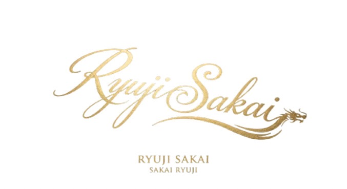

法人・個人・相続・税務調査対応まで。 豊富な実務経験と最新AI活用で、 経営者の不安を安心へ導きます。

兵庫県姫路市を拠点に、 33年間の国税勤務経験を活かし、 法人・個人・相続税務まで幅広くサポートしています。
長年の税務調査経験で培った知識と、 近年積極的に取り組んでいる AI・DX支援を融合し、 中小企業や個人事業主の経営改善を 実践的にご支援いたします。
税金の申告だけで終わるのではなく、 「相談して良かった」 と思っていただける 身近なパートナーを目指しています。
国税勤務で培った豊富な経験を、地域の皆様へ。
国税局へ採用。 就職氷河期の中で国税の道へ進み、税務の基礎を学びました。
年間34件以上の法人税調査を担当。 数多くの企業の税務・経営状況を確認し、 実務に基づく知識と経験を積み重ねました。
法人税だけでなく、 所得税・相続税など幅広い税法や 組織運営・法令全般に携わりました。
酒井税理士事務所を開業。 33年間の国税経験とAI・DX支援を組み合わせ、 経営者に寄り添う税理士として活動しています。
税務・相続・AI・DXまで、経営をトータルサポートします。
法人税・所得税・消費税など各種申告に対応。 日々の記帳から決算・申告まで安心してお任せいただけます。
相続税申告、遺産分割のご相談、 将来を見据えた生前対策まで丁寧にサポートします。
33年間の国税勤務経験を活かし、 税務調査への事前対策から当日の対応まで、 実践的なアドバイスをご提供します。
ChatGPTなどのAI活用、 業務効率化、 チャットボット導入、 DX推進を分かりやすく支援します。
税務・相続・税務調査・AI活用など、 どんなことでもお気軽にご相談ください。
お客様のお悩みを丁寧にお伺いし、 最適な解決方法をご提案いたします。
📞 TEL：079-263-7470
📠 FAX：079-263-7480
📍 〒671-1143 兵庫県姫路市大津区天満606番地6
🕘 営業時間：9:00〜18:00（日曜・祝日休業）